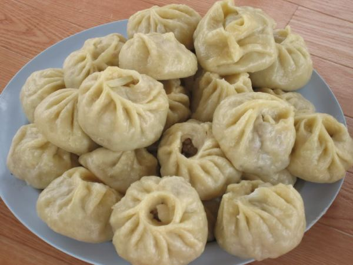

How to Make Mongolian Dumplings aka "Buuz"
Ingredients
- 500g ground beef or mutton
- 1 large onion, finely chopped
- Salt and pepper to taste
- 1 tablespoon vegetable oil
- Water, as needed
- Round dumpling wrappers (or make your own dough from flour and water)
Instructions:
- In a bowl, mix the ground meat with chopped onion, salt, and pepper.
- Take a dumpling wrapper and place a spoonful of the meat mixture in the center.
- Fold the wrapper in half and pinch the edges together to seal, creating a half-moon shape.
- Repeat with the remaining wrappers and filling.
- Heat a steamer or a large pot with water.
- Place the buuz in the steamer or on a steamer rack, ensuring they don't touch each other.
- Steam for about 20-25 minutes until the meat is cooked through and the wrappers are tender.
- Serve hot with soy sauce, vinegar, or dipping sauces of your choice.
Voila, bon appetit! or "Saihan Hoollooroi!" in Mongolian.
